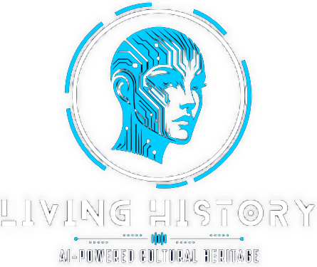
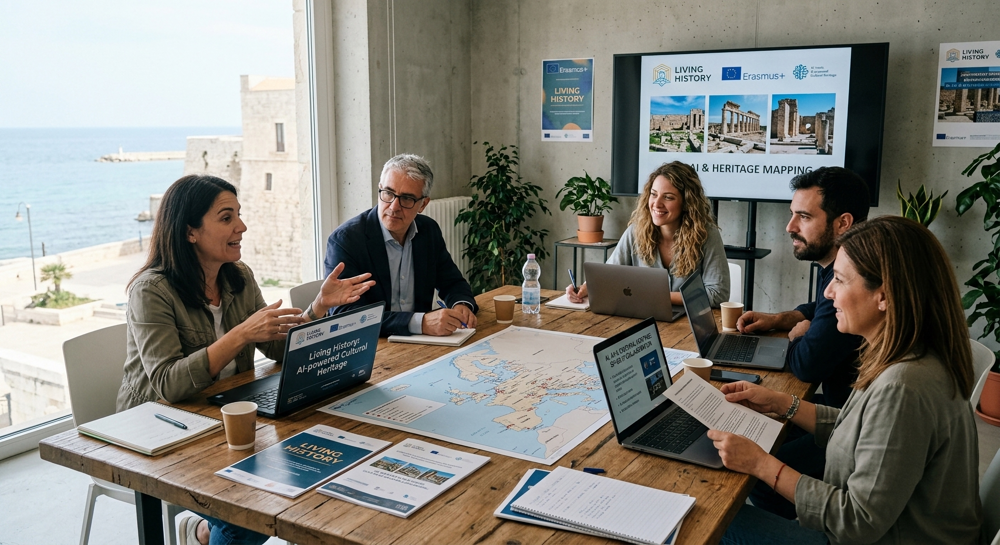
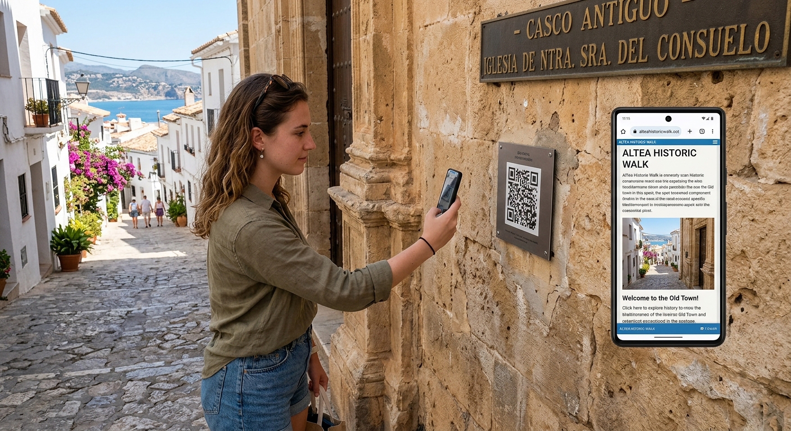
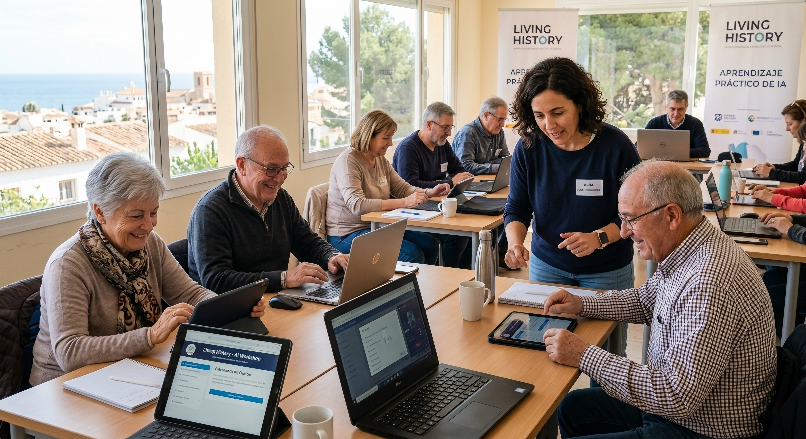
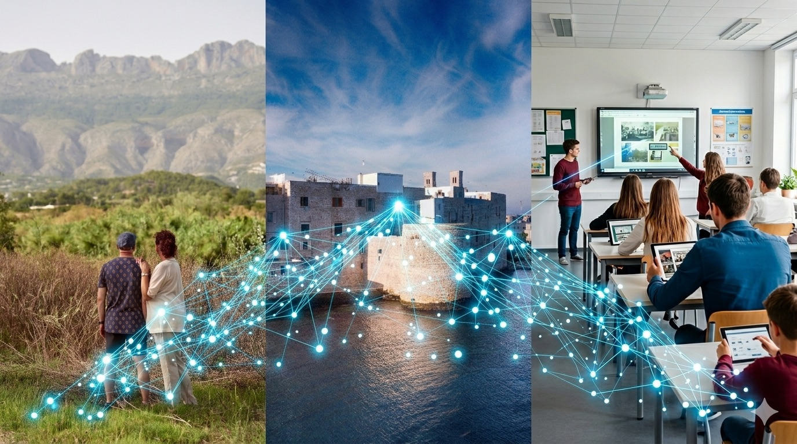

Paso 1
Guía Práctica: Inteligencia Artificial y Patrimonio Cultural
AI-powered Cultural Heritage
Small-scale partnerships in adult education
project nr. 2025-1-IT02-KA210-ADU-000350934
(Guía replicable para municipios, instituciones culturales y educativas)

Comenzar la guía →La inteligencia artificial está transformando la forma en que comprendemos, transmitimos y preservamos el patrimonio cultural.
El proyecto Living History, cofinanciado por Erasmus+, utiliza herramientas digitales avanzadas para dar nueva vida a la historia local y conectar generaciones a través de la tecnología.
Desde Altea, Karditsa y Molfetta, desarrollamos una metodología replicable para que cualquier comunidad pueda mapear, digitalizar y comunicar su patrimonio.


Toca un punto para conocer al socio
Promover el patrimonio cultural local utilizando herramientas de IA y realidad aumentada.
Formar a adultos y docentes en el uso de IA para recuperar historias y personajes.
Impulsar el aprendizaje intergeneracional y reducir la brecha digital.
Desarrollar una metodología transferible a cualquier territorio europeo.
Esta guía tiene como finalidad servir como manual práctico, ofreciendo los pasos, herramientas y ejemplos reales que faciliten la replicación del modelo Living History en otros municipios o instituciones.
Permiten a visitantes conversar con personajes como "El Guerrero de la Estela Ibérica".
La IA puede reconocer lugares y vincularlos a relatos orales.
Los usuarios escanean un punto del municipio y acceden a un avatar que narra la historia del lugar.

El proyecto Living History promueve el aprendizaje práctico de la IA entre adultos y docentes.
A través de talleres formativos, se enseña a entrenar chatbots, usar herramientas de RA y gestionar datos culturales.
El objetivo es acercar la tecnología a quienes normalmente no la usan, reforzando la confianza digital de los ciudadanos.
Las formaciones locales realizadas en Altea con el IES Bellaguarda son un ejemplo de cómo la IA puede integrarse en la enseñanza, el turismo y la cultura local.

La IA no reemplaza la historia: la amplifica.
Para que la IA pueda aprender, necesita materiales estructurados:
Textos claros, cronologías, descripciones y anécdotas.
Lenguaje inclusivo y neutral.
Varios formatos: texto, imagen, voz.
Los docentes pueden utilizar estas herramientas para que los estudiantes participen en la creación de avatares históricos, fortaleciendo su comprensión de la historia local y su pensamiento crítico digital.
Puede aplicarse en zonas rurales para combatir el despoblamiento.
En ciudades turísticas, puede diversificar la oferta cultural.
En escuelas, fomenta la educación digital y patrimonial.

El éxito del proyecto se mide tanto en la participación social como en el uso real de las herramientas creadas.
Algunos indicadores sugeridos:
Indicadores conceptuales — valores orientativos
Empieza con un pequeño piloto: un personaje, una historia, un barrio.
Crea un grupo local de apoyo (centro educativo + técnicos + asociaciones).
Usa herramientas accesibles, evita desarrollos costosos.
Documenta todo: testimonios, fotos, entrevistas.
Celebra los resultados con la comunidad: exposición, paseo, acto público.

Enlace a bancos de datos culturales europeos (Europeana, Wikimedia Commons). Europeana · Wikimedia Commons
Enlace al proyecto Erasmus+: https://erasmus-plus.ec.europa.eu erasmus-plus.ec.europa.eu ↗
Cada historia local puede transformarse en un diálogo vivo entre pasado y futuro. La inteligencia artificial nos da la voz; la memoria, el alma.
PROYECTO LIVING HISTORY: AI-POWERED CULTURAL HERITAGE

🎉 ¡Listo para lanzar tu propio Living History!
Has completado todos los pasos. Ahora es el momento de empezar.